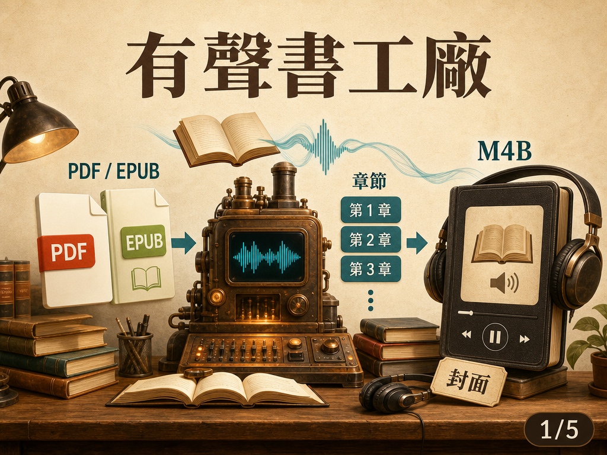
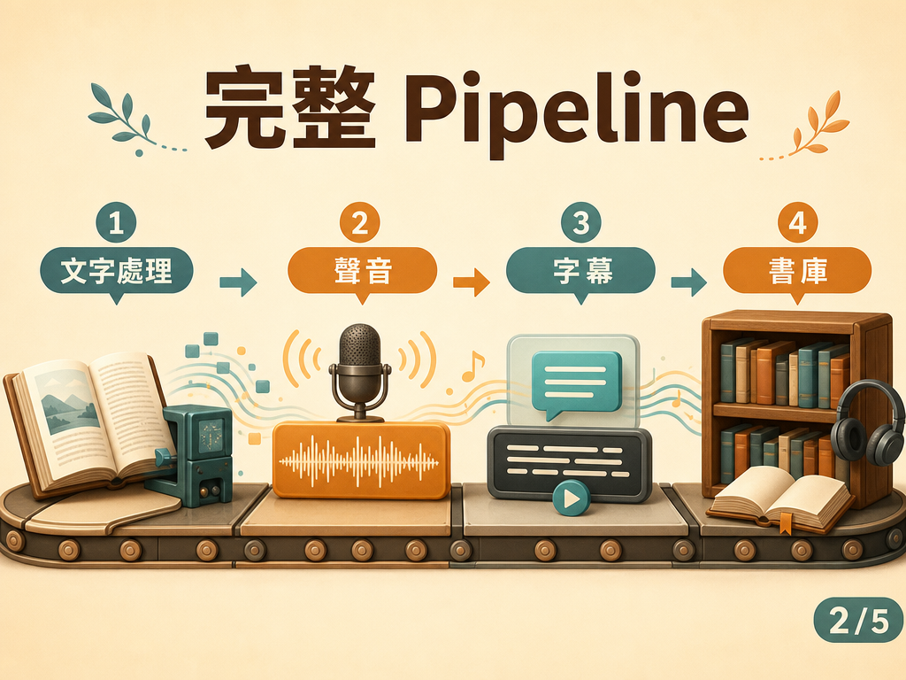
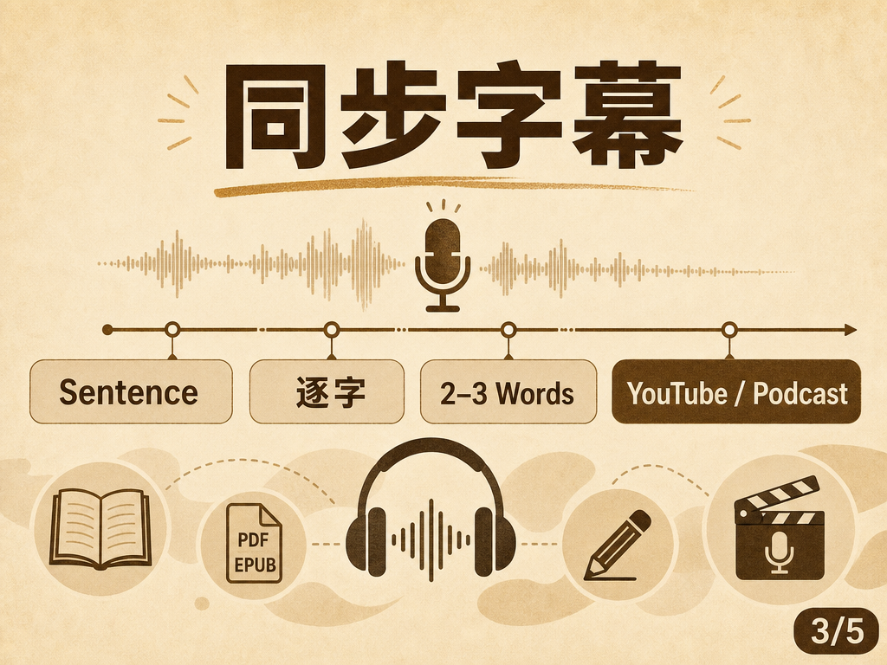
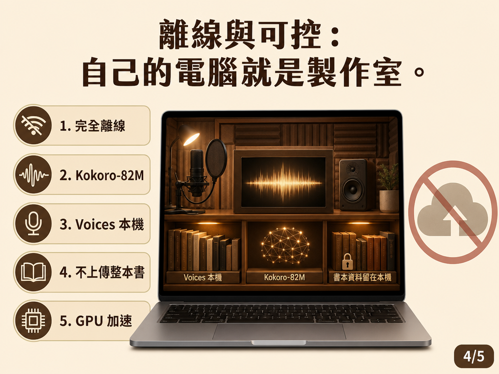
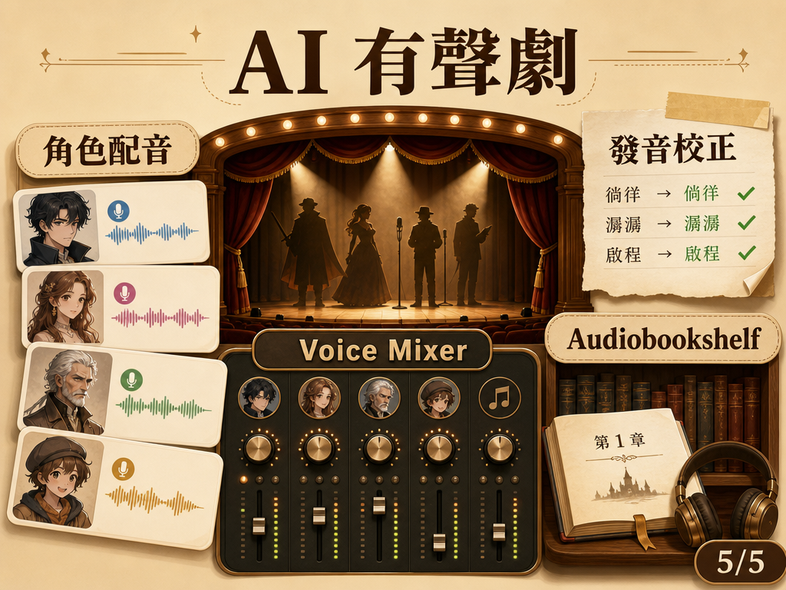

abogen：把 PDF／EPUB 變成真正有聲書的開源工具
abogen 把「文字轉語音」往前推成完整有聲書製作流程：從 PDF / EPUB 讀取、章節切分、語音生成、同步字幕，到 M4B、metadata 與 Audiobookshelf。
重點摘要





- 從 TTS 變成有聲書製作流程
abogen 的重點不是把文字轉成 MP3，而是補齊章節、封面、metadata、M4B 與播放器可辨識的結構。 - 輸入格式很廣，輸出格式也完整
支援 PDF、EPUB、TXT、Markdown 與字幕檔；輸出可到 MP3、FLAC、OPUS、WAV，甚至 M4B。 - 同步字幕讓用途超出電子書
可同步產生 SRT / ASS，並支援 Sentence、逐字、2～3 Words 與 Sentence Highlighting，適合影片旁白與知識內容。 - 離線與隱私是關鍵價值
Kokoro-82M 與 voices 可先下載到本機，不必把整本書送上 Cloud TTS，也能降低 API 成本與資料外流顧慮。 - 正在往 AI 有聲劇工具演化
Web UI 加入 Supertonic TTS、Voice Mixer、Pronunciation Override、角色聲音分配與 Audiobookshelf 整合。
查證資訊
| Repo | denizsafak/abogen |
|---|---|
| License | MIT |
| Stars | 查詢當下約 5,863 |
| 核心 TTS | Kokoro-82M |
| 平台 | Windows / Mac / Linux |
| GPU | NVIDIA CUDA；Linux 支援 AMD ROCm |
為什麼值得注意
原文整理
前幾天分享了一個把「書變成 Agent Skill」的開源工具，今天看到另一個很有意思的方向：直接把一本 PDF / EPUB，變成真正的有聲書。
最近研究了一個開源專案 abogen。
它不是單純把文字丟進 TTS，輸出一個 MP3，而是開始把整套 Audiobook Production Workflow 做起來。
你可以直接丟進 PDF、EPUB、TXT、Markdown，甚至 SRT / ASS / VTT 字幕。
它會幫你處理章節，再輸出成 MP3 / FLAC / OPUS / WAV，甚至是完整的 M4B + Chapters + Metadata + Book Cover。也就是拿到 Audiobook Player 裡，真的會看到第一章、第二章、第三章，而不是一個 10 小時長到不知道播到哪裡的 MP3。
另外一個很實用的功能是同步字幕。它可以在產生語音的同時生成 SRT / ASS 字幕，而且可以選 Sentence、逐字、2～3 Words、Sentence Highlighting。
所以它不只適合「把電子書變有聲書」，拿來做 YouTube 旁白、TikTok / Reels、Podcast 素材、教學影片、文章轉語音都很實用。
它的核心語音模型使用 Kokoro-82M，而且可以把 Model + Voices 先下載到電腦，之後完全離線跑。這件事很吸引人，因為不一定需要把整本書上傳到 Cloud TTS、按分鐘付 API 費用、把自己的檔案送到第三方 Server。你的電腦自己就是 Audiobook Factory。
新版 Web UI 已加入 Supertonic TTS、Voice Mixer、Pronunciation Override，碰到人名、品牌、專有名詞念錯，可以單獨調整。甚至還加入 Speaker / Role Assignment，也就是同一本書，可以讓不同角色使用不同聲音，開始有點像 Theatrical Audiobook。
除此之外，它還可以接 OpenAI-compatible LLM，例如接本機 Ollama，在文字真正送進 TTS 之前，先讓 LLM 處理不好朗讀的文字、縮寫與特殊格式。最後生成完成後，甚至可以直接 Push 到自己的 Audiobookshelf。
這已經不是「文字轉語音」了，而是一條 Book → Text Processing → Voice → Chapters → Subtitles → Metadata → Audiobook Library 的完整 Pipeline。
作者 Demo 裡，一台 RTX 2060 Mobile，約 3,000 characters 的文字，生成 3 分 28 秒語音只花約 11 秒。當然，整本書的速度還是會依 CPU / GPU 與設定不同。
目前 Windows / Mac / Linux 都能跑，NVIDIA GPU 可以加速，Linux 也支援 AMD ROCm。GitHub 查詢當下約 5,863 Stars，MIT 開源。
這類工具背後有一個很有意思的變化：以前想把一本書變成 Audiobook，是一個內容製作工作。要錄音、剪輯、切章節、整理 Metadata。現在開始變成：丟一本 EPUB 進去 → 等 AI 跑完 → 得到完整 Audiobook。
AI 正在把越來越多原本屬於媒體製作的工作，壓縮成一條自動化 Pipeline。如果平常有大量電子書、PDF、長文章，或者自己做 YouTube / Podcast / 知識型內容，這個很值得收藏。
以前 AI 只是幫你念文字。現在，你自己的電腦開始可以直接變成一間有聲書製作公司。
abogen GitHub：https://github.com/denizsafak/abogen